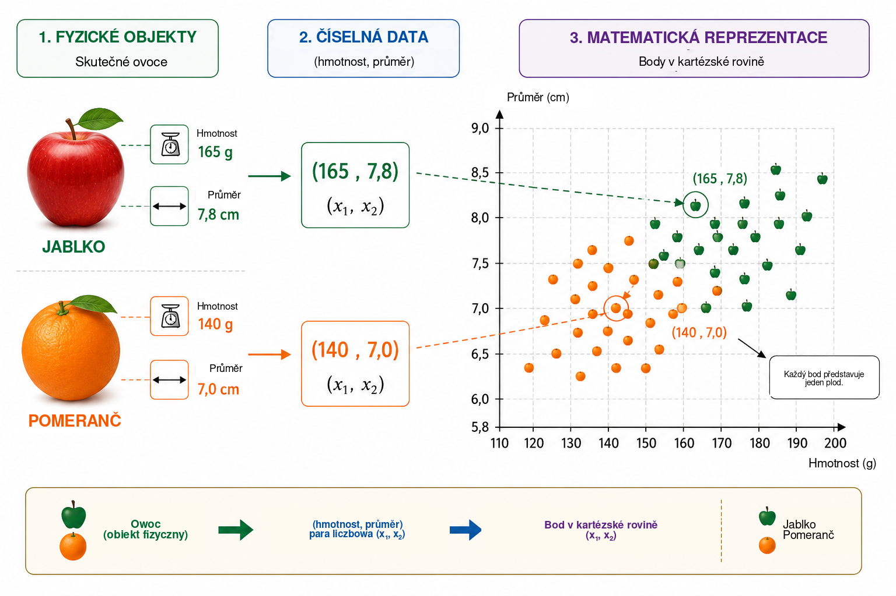
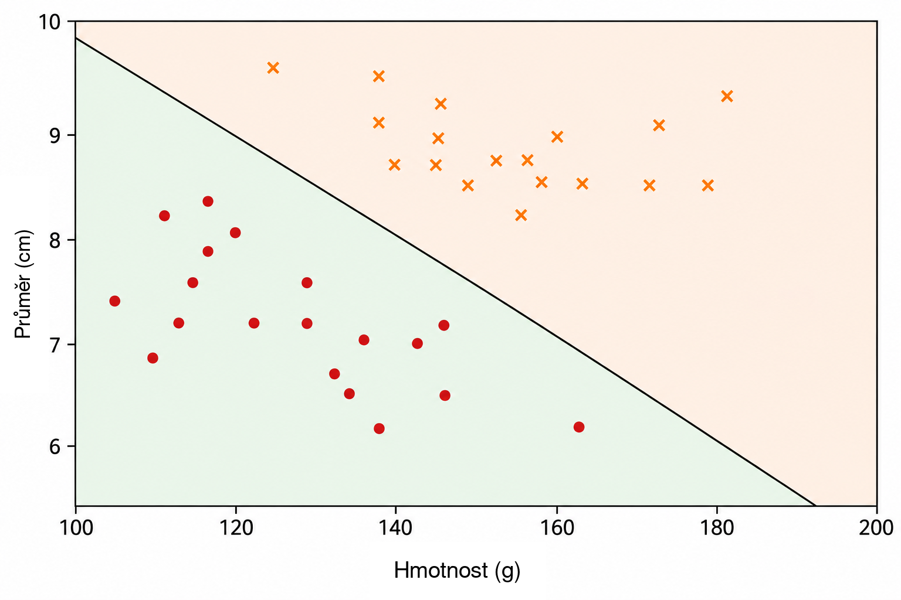
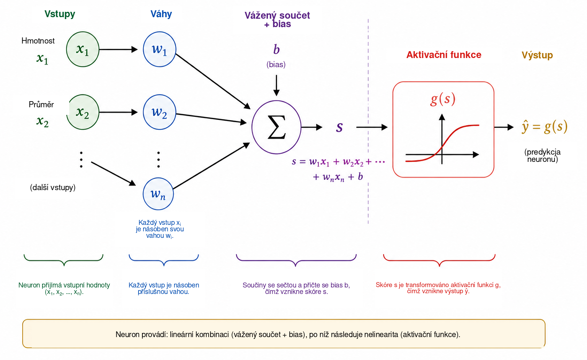
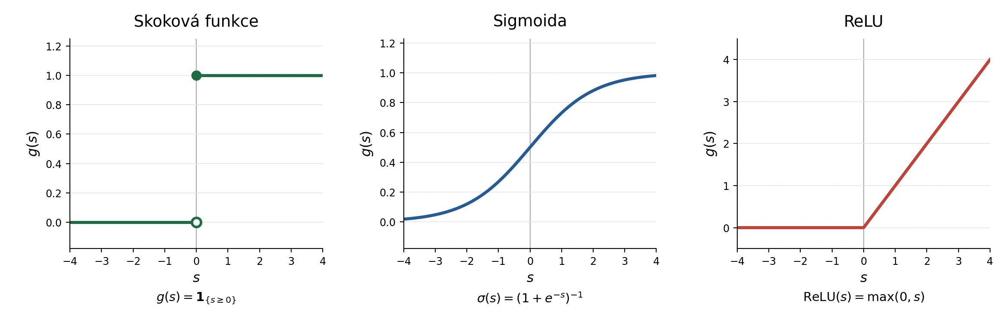
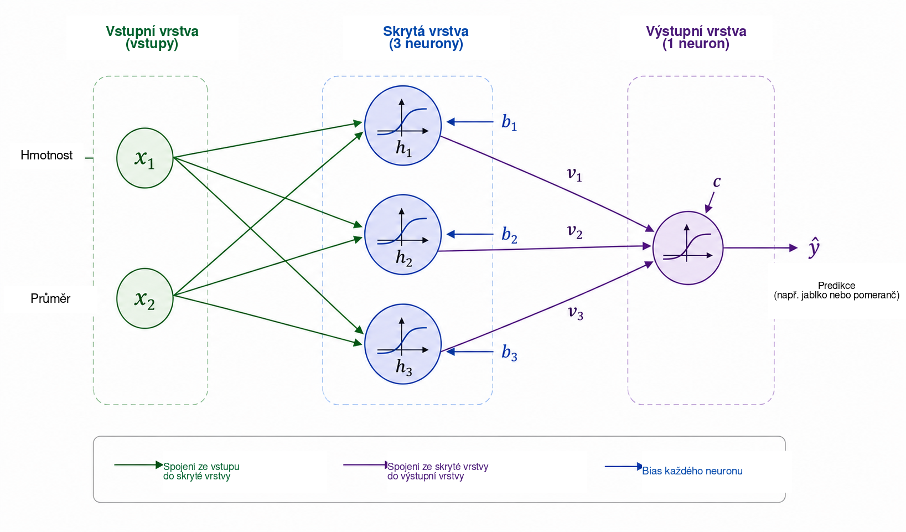
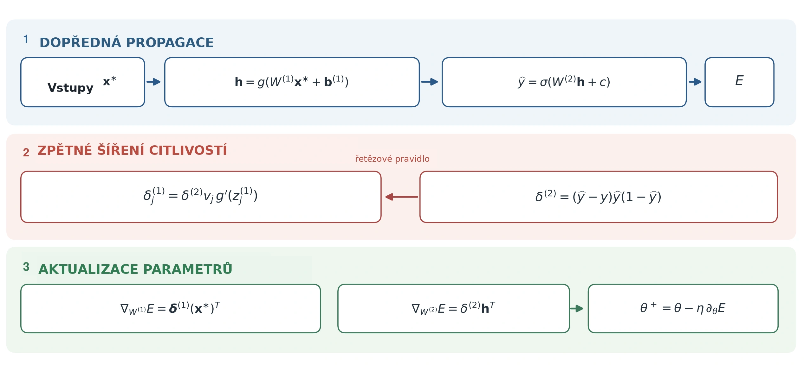
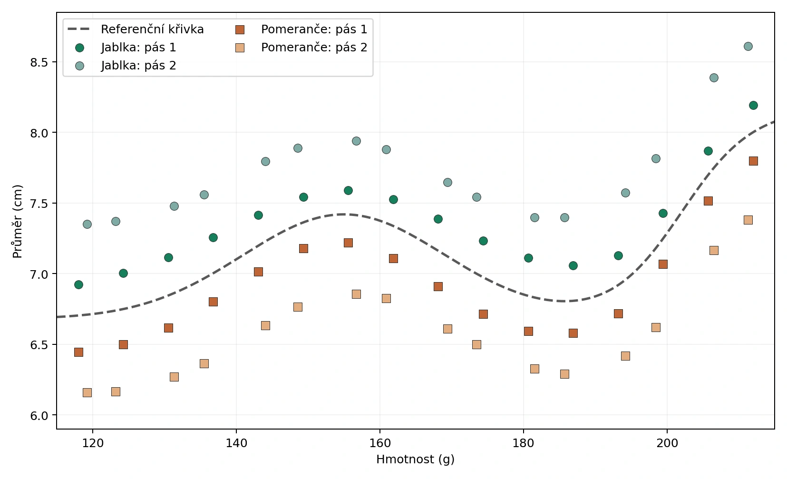
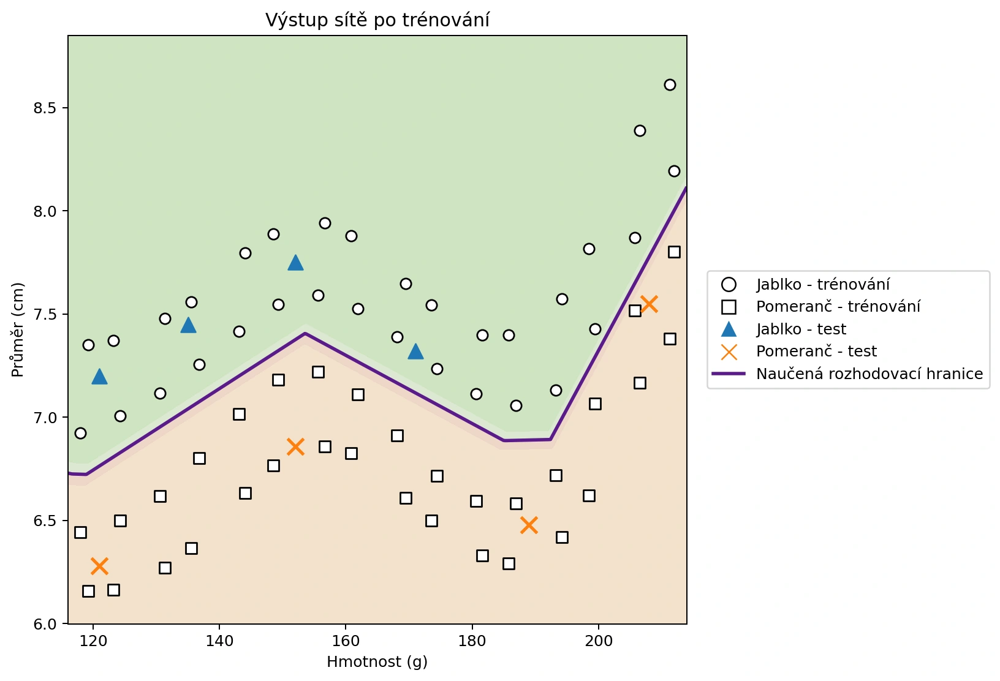

Kdy se může počítač učit?
V každodenním životě téměř bezděčně činíme klasifikační rozhodnutí. Když se podíváme na ovoce, rychle rozpoznáme, zda jde o jablko nebo pomeranč; když nám přijde zpráva do telefonu, odlišujeme běžnou komunikaci od nevyžádané reklamy; v lékařské analýze lze několik měření kombinovat jako podporu rozhodnutí; a ve finančních institucích se před poskytnutím úvěru vyhodnocuje mnoho informací. Ve všech těchto příkladech se současně posuzuje několik vlastností, aby bylo možné získat odpověď.
V mnoha tradičních počítačových programech jsou pravidla vedoucí k takové odpovědi explicitně zapsána programátorem. Tento přístup funguje dobře, pokud jsou pravidla známá a lze je jasně formulovat. Je však méně účinný, jsou-li data velmi rozmanitá nebo je-li obtížné předem stanovit všechny podmínky potřebné pro dobré rozhodnutí. To vede k přirozené otázce:
Můžeme vytvořit program, který se rozhodovací pravidlo naučí z příkladů, místo aby toto pravidlo dostal předem?
Jde o jednu z ústředních myšlenek strojového učení, oblasti umělé inteligence zabývající se metodami přizpůsobování modelů datům . V úloze učení s učitelem dostává algoritmus příklady spolu se správnými odpověďmi a naším cílem je nalézt model, který dokáže vytvářet užitečné predikce také pro případy nepoužité při tréninku. Mezi mnoha modely vyvinutými pro tento účel získaly zvláštní význam umělé neuronové sítě, používané mimo jiné při rozpoznávání obrazu, zpracování jazyka, analýze signálů a předpovídání časových řad .
Využití neuronových sítí jako mostu mezi matematikou, výpočty a školním vzděláváním již v časopise Professor de Matemática Online diskutovali Batista a Martins , kteří představili aktivitu spojenou se vzděláváním učitelů, Pythonem a rozpoznáváním číslic. Tento článek volí doplňující pohled. Naším hlavním cílem je odhalit matematiku uvnitř malé neuronové sítě, počínaje analytickou geometrií a následně krok za krokem přecházet k výpočtu gradientu a ruční implementaci zpětného šíření.
Navzdory propracovanosti současných aplikací lze matematické jádro neuronové sítě zavést pomocí poměrně dobře známých pojmů. Na základní úrovni je neuronová síť složením funkcí, jejichž parametry se nastavují na základě dat. Začínáme jednoduchým geometrickým problémem, reinterpretujeme oddělující přímku jako umělý neuron, spojíme několik neuronů, analyzujeme úlohu aktivačních funkcí a ukážeme, jak lze derivace použít k automatickému nastavování parametrů sítě. Poté implementujeme úplný malý příklad v Pythonu a zachováme přímou souvislost mezi rovnicemi a kódem.
Matematická reprezentace problému
Abychom pochopili fungování neuronové sítě, začneme záměrně zjednodušeným problémem: rozlišováním jablek a pomerančů. Ovoce má mnoho vlastností, které by mohly být pro tuto úlohu užitečné, například barvu, hmotnost, průměr, texturu nebo vůni. Počáteční matematický model však nemusí zahrnovat celou tuto složitost. Použijeme pouze dvě snadno měřitelné veličiny: hmotnost v gramech a průměr v centimetrech.
Každý plod tedy budeme reprezentovat uspořádanou dvojicí \[(x_1,x_2),\] kde \[x_1=\text{hmotnost} \qquad\text{a}\qquad x_2=\text{průměr}.\]
Dvojice \((155,\;7.2)\) tedy představuje plod o hmotnosti \(155\) g a průměru \(7.2\) cm. Nahrazením fyzického objektu dvěma číselnými měřeními přiřadíme každému plodu bod v kartézské rovině: první souřadnice označuje hmotnost a druhá průměr. Obrázek 1 tuto reprezentaci ilustruje pro hypotetickou množinu jablek a pomerančů.

Tato transformace mění způsob, jakým na problém nahlížíme. Místo přímé otázky, jak rozpoznat jablko nebo pomeranč, můžeme položit geometrickou otázku: jak v rovině oddělit body náležející dvěma třídám? Taková změna pohledu má ve strojovém učení zásadní význam. Obrazy, texty, zvuky a experimentální signály musí být převedeny na numerické reprezentace, než je algoritmus může zpracovat. V našem příkladu má každý objekt pouze dvě souřadnice; v reálných aplikacích může reprezentace obsahovat stovky, tisíce nebo dokonce miliony složek. Princip zůstává stejný: každý příklad je spojen se souborem čísel a model hledá pravidlo, které tuto reprezentaci mapuje na požadovanou odpověď.
Začneme nejjednodušším dostupným geometrickým pravidlem a zeptáme se, zda jediná přímka dokáže dostatečně dobře oddělit body odpovídající jablkům od bodů odpovídajících pomerančům.
Přímka jako klasifikátor
Jakmile každý plod zobrazíme jako bod v kartézské rovině, stává se klasifikace geometrickým problémem: může přímka oddělit jablka od pomerančů? Tato otázka obsahuje základní myšlenku důležité rodiny metod strojového učení nazývaných lineární klasifikátory.
Uvažujme přímku protínající oblak dat, jak ukazuje Obrázek 2. Přímka rozděluje rovinu na dvě poloroviny. Pokud většina bodů odpovídajících jablkům leží na jedné straně a většina bodů odpovídajících pomerančům na druhé, může poloha nového plodu vzhledem k přímce sloužit jako klasifikační pravidlo. Po změření jeho hmotnosti a průměru reprezentujeme plod jako bod a určíme, na které straně přímky tento bod leží.

V kartézské rovině \((x_1,x_2)\) lze přímku popsat rovnicí \[w_1x_1+w_2x_2+b=0, \qquad (w_1,w_2)\neq(0,0).\]
Vektor \((w_1,w_2)\) je kolmý k přímce, a proto určuje její orientaci, zatímco parametr \(b\) ovlivňuje její polohu. Tato reprezentace má malou redundanci: současné vynásobení \(w_1\), \(w_2\) a \(b\) stejnou nenulovou konstantou dává přesně tutéž přímku. Parametry popisující hranici tedy nejsou jednoznačné. Jejich číselná interpretace závisí také na měřítku proměnných. Protože hmotnost měříme v gramech a průměr v centimetrech, neměli bychom číselné hodnoty \(w_1\) a \(w_2\) přímo porovnávat bez zohlednění odlišných jednotek.
Samotná rovnice přímky poskytuje jednoduchý způsob, jak určit, na které straně hranice bod leží. Definujme skóre \[s(x_1,x_2)=w_1x_1+w_2x_2+b.\]
Je-li \(s(x_1,x_2)=0\), bod leží na přímce. Když \(s(x_1,x_2)>0\), nachází se v jedné polorovině; když \(s(x_1,x_2)<0\), v druhé. Přijmeme-li konvenci, že kladné hodnoty odpovídají jablkům a záporné pomerančům, pravidlo má tvar \[\begin{cases} s(x_1,x_2)\geq 0 & \Longrightarrow \text{jablko},\\ s(x_1,x_2)<0 & \Longrightarrow \text{pomeranč}. \end{cases}\]
Uvažujme například hranici danou \[w_1=\frac{1}{10}, \qquad w_2=2, \qquad b=-30.\] Pro plod o hmotnosti \(160\) g a průměru \(7.8\) cm, \[\begin{aligned} s &=\frac{1}{10}\times160+2\times7.8-30\\ &=16+15.6-30\\ &=1.6. \end{aligned}\] Protože je skóre kladné, bod se nachází v polorovině, kterou jsme spojili s jablky. Klasifikátor by tedy tomuto plodu přiřadil štítek jablka.
Ne každá volba \(w_1\), \(w_2\) a \(b\) vede k dobré klasifikaci. Některé přímky oddělují obě skupiny špatně, zatímco jiné vedou k menšímu počtu chyb. Úloha učení spočívá právě ve využití předem označených příkladů k určení hodnot parametrů, které zmenšují míru chyby modelu. Místo přímého naprogramování polohy přímky chceme, aby algoritmus její koeficienty nastavil z dat.
Jediná přímka může fungovat dobře, jsou-li třídy přibližně lineárně separovatelné. Složitější datové soubory mohou vyžadovat nelineární hranici. Než se tímto omezením budeme zabývat, interpretujeme vytvořený klasifikátor jako základní výpočetní jednotku: umělý neuron.
Umělý neuron
V předchozí části výraz \[s=w_1x_1+w_2x_2+b\] sloužil k určení, na které straně přímky se plod nachází. Tentýž výraz lze chápat jako první fázi výpočtu prováděného umělým neuronem. Neuron přijímá číselné vstupy, kombinuje je pomocí vah a biasu a poté použije matematickou funkci, aby získal výstup.
V našem příkladu jsou vstupy hmotnost \(x_1\) a průměr \(x_2\). Každý vstup se násobí parametrem nazývaným váha; součiny se sčítají s konstantním členem \(b\), nazývaným bias. Obrázek 3 schematicky znázorňuje tento výpočet.

Váhy určují, jak změny vstupů ovlivňují skóre. Jsou-li \(x_2\) a všechny ostatní veličiny konstantní, změní změna \(\Delta x_1\) hodnotu \(s\) o \(w_1\Delta x_1\). Analogicky změna \(\Delta x_2\) změní skóre o \(w_2\Delta x_2\). Důležité je také znaménko: kladná váha způsobí, že růst vstupu zvyšuje skóre, zatímco záporná váha má opačný účinek. Tuto interpretaci je třeba používat opatrně, mají-li proměnné různé jednotky a měřítka. Proto se v praktických implementacích vstupní data před tréninkem často normalizují nebo standardizují.
Bias \(b\) je konstantní člen afinní transformace. Geometricky umožňuje posouvat rozhodovací hranici. Když \(b=0\), rovnice \[w_1x_1+w_2x_2=0\] nutí přímku procházet počátkem souřadnic. Přítomnost biasu umožňuje hranici posunout jinam. Ekvivalentně, když \(x_1=x_2=0\), je skóre jednoduše \(s=b\).
Skóre nemusí být konečným výstupem neuronu. Obecně se na ně aplikuje aktivační funkce \(g\): \[\widehat{y}=g(s)=g\left(w_1x_1+w_2x_2+b\right).\] Výpočet má tedy dvě fáze, \[\begin{aligned} s &= w_1x_1+w_2x_2+b,\\[4pt] \widehat{y} &= g(s). \end{aligned}\]
Pro hodnoty parametrů z předchozí části dostáváme \(s=1.6\). Zvolíme-li skokovou funkci \[g(s)= \begin{cases} 1, & s\geq0,\\ 0, & s<0, \end{cases}\] pak \(\widehat{y}=g(1.6)=1\). Podle přijaté konvence je plod klasifikován jako jablko. Při takové aktivaci se rozhodnutí mění, když \(s\) prochází nulou, takže hranice tříd je přesně dána \[w_1x_1+w_2x_2+b=0.\]
Jediný neuron je tedy jednoduchý matematický objekt s nastavitelnými parametry. Jeho skutečný význam se projeví při spojení mnoha takových jednotek. Než však síť sestavíme, musíme pochopit, proč je aktivační funkce tak důležitá.
Proč potřebujeme aktivační funkci?
Neuron nejprve vypočítá skóre pomocí afinní transformace a teprve poté použije aktivační funkci. Tento druhý krok je nezbytný, má-li neuronová síť reprezentovat složité závislosti. Abychom viděli proč, představme si síť bez aktivačních funkcí. Každá jednotka by pak měla tvar \[y=w_1x_1+w_2x_2+b.\]
Pro jednorozměrnou ilustraci předpokládejme, že první jednotka určuje \[h=ax+b\] a druhá počítá \[y=ch+d.\] Po dosazení dostáváme \[y=c(ax+b)+d=acx+(cb+d),\] což je stále afinní funkce proměnné \(x\). Totéž platí ve více rozměrech: složení afinních transformací zůstává afinní. Přidávání mnoha vrstev bez nelineární operace tedy zásadně nezvyšuje reprezentační schopnost sítě; celé složení by bylo možné nahradit jedinou afinní transformací.
Aktivační funkce toto omezení překonává. Po výpočtu skóre \(s\) neuron obvykle použije nelineární zobrazení \[h=g(s).\] Když spojíme několik takových jednotek, výsledné složení už nelze redukovat na jedinou afinní transformaci. Díky tomu může síť vytvářet složitější rozhodovací hranice.
Nejjednodušší aktivační funkcí je skoková funkce, \[g(s)= \begin{cases} 1, & s\geq0,\\ 0, & s<0. \end{cases}\] Poskytuje binární rozhodnutí a je velmi užitečná pro pochopení klasifikace. Její derivace je však rovna nule pro \(s\neq0\) a v \(s=0\) neexistuje. Protože gradientní učení využívá derivace k určení, jak se mají parametry měnit, není skoková funkce pro takový mechanismus tréninku vhodná.
Jednou z alternativ je sigmoidní funkce, \[\sigma(s)=\frac{1}{1+e^{-s}}.\] Zobrazuje každé reálné číslo na hodnotu striktně mezi \(0\) a \(1\). Pro velmi záporné \(s\) se výstup blíží \(0\); pro velmi kladné \(s\) se blíží \(1\); mezi těmito krajními hodnotami je přechod plynulý. Sigmoidní funkce je všude derivovatelná a platí \[\sigma'(s)=\sigma(s)\bigl(1-\sigma(s)\bigr).\] Protože její hodnoty leží mezi \(0\) a \(1\), často se používá ve výstupní vrstvě binárního klasifikátoru. V pravděpodobnostním pojetí lze při vhodné ztrátové funkci výstup interpretovat jako odhad pravděpodobnosti třídy označené hodnotou \(1\). Ve skrytých vrstvách však může sigmoid způsobovat obtíže: pro vstupy s velkou absolutní hodnotou se jeho derivace stává velmi malou, což přispívá k problému mizejícího gradientu v hlubokých sítích.
Běžně používanou aktivační funkcí ve skrytých vrstvách je ReLU (Rectified Linear Unit), \[\mathrm{ReLU}(s)=\mathrm{max}(0,s) = \begin{cases} 0, & s<0,\\ s, & s\geq0. \end{cases}\] Ačkoli se skládá ze dvou lineárních úseků, ReLU není globálně lineární. Její derivace je rovna \(0\) pro \(s<0\) a \(1\) pro \(s>0\). V bodě \(s=0\) běžná derivace neexistuje, proto programové implementace volí určitou konvenci pro gradient. Pro kladné vstupy derivace s růstem \(s\) neklesá, což pomáhá vyhnout se jednomu z mechanismů saturace sigmoidní funkce.
Obrázek 4 vizuálně porovnává tyto tři aktivační funkce: prudký skok skokové funkce, plynulý přechod sigmoidy a změnu sklonu ReLU.

Jejich nejdůležitější vlastnosti jsou shrnuty níže.
| Funkce | Výstup | Derivace | Typické použití |
|---|---|---|---|
| Skoková | \(\{0,1\}\) | Nula pro \(s\neq0\); nedefinovaná v \(s=0\) | Historické modely a didaktické příklady |
| Sigmoidní | \((0,1)\) | Existuje pro každé \(s\) | Výstupní vrstva v binární klasifikaci |
| ReLU | \([0,\infty)\) | \(0\) pro \(s<0\) a \(1\) pro \(s>0\) | Skryté vrstvy |
Detaily těchto funkcí se liší, jejich společnou pojmovou úlohou je však zavedení nelinearity. Právě nelinearita umožňuje malé síti v následující části reprezentovat vztahy, které jediná přímka zachytit nedokáže.
Čtenářům, kteří chtějí téma dále prohloubit, nabízí Haykin klasický výklad neuronových sítí, zatímco Goodfellow, Bengio a Courville diskutují aktivační funkce a trénink hlubokých sítí v širším kontextu. Volně dostupný text Nielsena je zvláště přístupný při budování intuice o neuronech, aktivacích a učení.
Stavba malé neuronové sítě
Uvažujme nyní síť se dvěma vstupy, jednou skrytou vrstvou obsahující tři neurony a jedním výstupním neuronem. Vstupy zůstávají následující: \[x_1=\text{hmotnost}, \qquad x_2=\text{průměr},\] a oba jsou přivedeny do každého skrytého neuronu, jak ukazuje Obrázek 5.

Nechť jsou výstupy skryté vrstvy \(h_1\), \(h_2\) a \(h_3\). Každý neuron dostává stejné dva vstupy, ale má vlastní váhy a bias: \[\begin{aligned} h_1&=g\left(w_{11}x_1+w_{12}x_2+b_1\right),\\[4pt] h_2&=g\left(w_{21}x_1+w_{22}x_2+b_2\right),\\[4pt] h_3&=g\left(w_{31}x_1+w_{32}x_2+b_3\right). \end{aligned}\]
Ačkoli všechny tři neurony dostávají stejnou hmotnost a průměr, mohou dávat různé odpovědi, protože jejich parametry jsou odlišné. Během tréninku se tyto parametry nastavují tak, aby mezilehlé aktivace byly užitečné pro klasifikaci.
Tři veličiny \(h_1\), \(h_2\) a \(h_3\) jsou následně předány výstupnímu neuronu, který vypočítá \[s_{\mathrm{out}}=v_1h_1+v_2h_2+v_3h_3+c\] a vytvoří \[\widehat{y}=g_{\mathrm{out}}\left(s_{\mathrm{out}}\right).\] Pro náš binární problém používáme sigmoidní výstup: \[\widehat{y}=\sigma\left(v_1h_1+v_2h_2+v_3h_3+c\right), \qquad 0<\widehat{y}<1.\]
Přiřadíme-li \(y=1\) jablku a \(y=0\) pomeranči, vede práh \(0.5\) ke klasifikačnímu rozhodnutí \[\widehat{y}\geq0.5 \Longrightarrow \text{jablko}, \qquad \widehat{y}<0.5 \Longrightarrow \text{pomeranč}.\] Hodnoty blízké \(1\) jsou tedy silně spojeny s jablky, zatímco hodnoty blízké \(0\) s pomeranči. Jak jsme již uvedli, číselná interpretace \(\widehat{y}\) jako pravděpodobnosti vyžaduje další předpoklady o modelu a jeho tréninku. Pro zde používané klasifikační pravidlo stačí chápat \(\widehat{y}\) jako spojitý výstup sítě.
Klíčovou vlastností této architektury je mezilehlá reprezentace \[(x_1,x_2) \longrightarrow (h_1,h_2,h_3) \longrightarrow \widehat{y}.\] Síť přijímá dvě vlastnosti a před vytvořením konečné odpovědi konstruuje tři nové veličiny. Tyto aktivace nejsou voleny ručně: závisí na vahách a biasech, a proto se během tréninku parametrů mění.
Navzdory malé velikosti má síť již třináct nastavitelných parametrů. Tři skryté neurony obsahují \[3(2+1)=9\] parametrů a výstupní neuron přidává \[3+1=4.\] Zatem \[9+4=13.\]
Stejné počítání je přehledné v maticovém zápisu. Definujme \[\mathbf{x}= \begin{bmatrix} x_1\\x_2 \end{bmatrix}, \qquad W^{(1)}= \begin{bmatrix} w_{11}&w_{12}\\ w_{21}&w_{22}\\ w_{31}&w_{32} \end{bmatrix}, \qquad \mathbf{b}^{(1)}= \begin{bmatrix} b_1\\b_2\\b_3 \end{bmatrix}.\] Pak lze skrytou vrstvu stručně zapsat jako \[\mathbf{h}=g\left(W^{(1)}\mathbf{x}+\mathbf{b}^{(1)}\right),\] kde \(g\) působí po složkách. Pro výstup platí \[\widehat{y} = \sigma\left(W^{(2)}\mathbf{h}+b^{(2)}\right),\] kde \[W^{(2)}= \begin{bmatrix} v_1&v_2&v_3 \end{bmatrix}.\]
Tento zápis předznamenává strukturu, která se objeví v programu v Pythonu. Když plod přivedeme na vstup a postupně počítáme aktivace až k \(\widehat{y}\), provádíme dopředné šíření (angl. forward pass). Zůstává klíčová otázka: jak automaticky určit třináct parametrů tak, aby predikce odpovídaly datům?
Jak se neuronová síť učí?
Váhy a posuny (biasy) sítě nejsou předem známé: upravují se podle příkladů se známými třídami. Učení spočívá v opakování dopředného průchodu, výpočtu ztráty, určení gradientů a aktualizace parametrů (Obrázek 6). Řetězové pravidlo umožňuje zjistit, jak je ztráta lokálně citlivá na každou váhu a každý posun.
K úpravě parametrů potřebujeme nejprve číselnou míru rozdílu mezi předpovědí a očekávanou odpovědí. Ztrátová funkce přiřazuje každé předpovědi penalizaci a umožňuje porovnávat různé volby vah a posunů. Na rozdíl od pouhého počítání chybných klasifikací spojitá ztrátová funkce rozlišuje předpovědi bližší a vzdálenější skutečné třídě a poskytuje derivace pro řízení trénování.
Uvažujme plod s hmotností \(140\) g a průměrem \(7.0\) cm, označený jako pomeranč (\(y=0\)). Označíme-li výstup sítě jako \(\widehat y\in(0,1)\), pro jedno pozorování použijeme kvadratickou ztrátu:
\[\label{eq:perda} E=\frac12(\widehat y-y)^2.\]
Zde \(y\) představuje skutečnou třídu a \(\widehat y\) předpověď. Ztráta je nezáporná a blíží se nule, jestliže se předpověď blíží správné hodnotě; větší rozdíl \(|\widehat y-y|\) znamená větší penalizaci. Pro pomeranč dávají předpovědi \(0.80\) a \(0.60\) hodnoty \(E=0.32\) a \(E=0.18\). Při prahu \(0.5\) obě chybně označují plod za jablko, avšak ztráta rozlišuje, která je blíže cíli. Faktor \(1/2\) nemění minimum a zjednodušuje derivování.
Síť se musí učit z mnoha příkladů, nikoli z jediného plodu. Pro \(N\) pozorování definujeme průměrnou ztrátu
\[\label{eq:perda_media} J=\frac1N\sum_{i=1}^{N}E_i.\]
Tento průměr shrnuje přizpůsobení trénovacím datům a jeho hodnotu chceme úpravou parametrů snižovat. Minimalizace \(J\) sama o sobě nezaručuje dobré předpovědi pro nová data; vrátíme se k tomu při diskusi generalizace. Kvadratickou ztrátu z rovnice perda používáme pro algebraickou jednoduchost a později její gradient porovnáme s gradientem binární křížové entropie bez změny numerického experimentu [2, 3].

Je-li \(\theta\) váha nebo posun, derivace \(\partial J/\partial\theta\) vyjadřuje lokální citlivost průměrné ztráty na tento parametr. Krok gradientního sestupu má tvar
\[\label{eq:descida} \theta_{\mathrm{new}}=\theta_{\mathrm{old}}-\eta\frac{\partial J}{\partial\theta},\qquad \eta>0.\]
Rychlost učení \(\eta\) řídí velikost kroku: příliš malé hodnoty mohou zpomalit konvergenci, příliš velké mohou vyvolat oscilace nebo divergenci. Aktualizujeme-li parametry po každém pozorování, jako v kódu v Oddílu 8, nahradíme \(\partial J/\partial\theta\) výrazem \(\partial E_i/\partial\theta\). Jde o zde použitou formu stochastického gradientního sestupu (SGD).
Řetězové pravidlo v síti 2–3–1
Použijeme síť z Obrázku [fig:pequena_rede] se třemi skrytými neurony ReLU a sigmoidálním výstupem. Vstupy představují hmotnost (v gramech) a průměr (v centimetrech), tedy veličiny s různými číselnými škálami. Aby tento rozdíl nezhoršoval podmíněnost optimalizace, transformujeme každou charakteristiku jako \(x_j^{\ast}=(x_j-\mu_j)/\sigma_j\), kde \(\mu_j\) a \(\sigma_j>0\) jsou referenční průměr a směrodatná odchylka. Vzniknou bezrozměrné vstupy srovnatelné škály, což usnadňuje volbu optimalizačního kroku. Ve výpočetním experimentu se tyto statistiky počítají pouze z trénovacích dat, aby nedocházelo k úniku informace z testovací množiny. V následujícím číselném příkladu jsou středy a škály pevně dány jen pro zjednodušení výpočtů.
Pro standardizovaný vstup \(\mathbf{x}^{\ast}=(x_1^{\ast},x_2^{\ast})^{\mathsf T}\) má dopředná propagace tvar
\[\label{eq:forward} \begin{aligned} \mathbf{z}^{(1)}&=W^{(1)}\mathbf{x}^{\ast}+\mathbf{b}^{(1)}, &\mathbf{h}&=\operatorname{ReLU}(\mathbf{z}^{(1)}),\\ z^{(2)}&=W^{(2)}\mathbf{h}+c, &\widehat y&=\sigma(z^{(2)}). \end{aligned}\]
Zde \(c=b^{(2)}\) je posun výstupního neuronu a \(W^{(2)}=(v_1,v_2,v_3)\). Zpětné šíření začíná u výstupu postupným použitím řetězového pravidla:
\[\label{eq:delta_saida} \begin{aligned} \delta^{(2)}:=\frac{\partial E}{\partial z^{(2)}} &=\underbrace{\frac{\partial E}{\partial\widehat y}}_{\widehat y-y} \underbrace{\frac{\partial\widehat y}{\partial z^{(2)}}}_{\widehat y(1-\widehat y)} =(\widehat y-y)\widehat y(1-\widehat y),\\ \frac{\partial E}{\partial v_j}&=\delta^{(2)}h_j, \qquad \frac{\partial E}{\partial c}=\delta^{(2)}. \end{aligned}\]
Protože každá aktivace \(h_j\) závisí také na vahách a posunu daného neuronu, určíme citlivosti skrytých neuronů:
\[\label{eq:delta_oculta} \begin{aligned} \delta_j^{(1)}:=\frac{\partial E}{\partial z_j^{(1)}} &=\delta^{(2)}v_j\,\operatorname{ReLU}'(z_j^{(1)}),\\ \frac{\partial E}{\partial w_{jk}} &=\delta_j^{(1)}x_k^{\ast},\qquad \frac{\partial E}{\partial b_j}=\delta_j^{(1)}. \end{aligned}\]
ReLU není diferencovatelná v nule; kde je třeba, používáme výpočetní konvenci \(\operatorname{ReLU}'(0)=0\). Veličiny \(\delta^{(2)}\) a \(\delta_j^{(1)}\) jsou lokální citlivosti ztráty, nikoli „fyzické chyby“ putující sítí. Jejich opětovné použití umožňuje spočítat všech třináct gradientů bez opakování úplného derivování pro jednotlivé váhy.
Úplná numerická aktualizace parametrů
Pro přehlednost výpočtů zvolíme pouze v tomto příkladu střed \(160\) g a škálu \(20\) g pro hmotnost, střed \(7.5\) cm a škálu \(0.5\) cm pro průměr. Plod \((140\,\mathrm{g},7.0\,\mathrm{cm})\) má pak bezrozměrný vstup
\[\label{eq:exemplo_entrada} \mathbf{x}^{\ast}=\begin{bmatrix}(140-160)/20\\(7.0-7.5)/0.5\end{bmatrix} =\begin{bmatrix}-1\\-1\end{bmatrix}.\]
Tyto referenční hodnoty slouží jen k demonstraci; v Oddílu 8 se průměr a směrodatná odchylka vypočítají přímo z trénovacích dat.
Zvolme třináct počátečních parametrů
\[\label{eq:param_iniciais} W^{(1)}=\begin{bmatrix} 0.2&0.1\\-0.3&0.2\\0.1&-0.4 \end{bmatrix},\quad \mathbf{b}^{(1)}=\begin{bmatrix}\phantom{-}0.5\\\phantom{-}0.2\\-0.5\end{bmatrix},\quad W^{(2)}=\begin{bmatrix}\phantom{-}0.5&-0.4&\phantom{-}0.3\end{bmatrix},\quad c=1.\]
Rovnice forward postupně dává
\[\label{eq:exemplo_forward} \begin{gathered} \mathbf{z}^{(1)}=(0.2,\;0.3,\;-0.2)^{\mathsf T},\qquad \mathbf{h}=(0.2,\;0.3,\;0)^{\mathsf T},\\ z^{(2)}=0.5(0.2)-0.4(0.3)+1=0.98,\\ \widehat y=\sigma(0.98)\simeq0.727108,\qquad E\simeq0.264343. \end{gathered}\]
Původní předpověď odpovídá nesprávné třídě. Z rovnic delta_saida a delta_oculta dostáváme
\[\label{eq:exemplo_gradientes} \begin{gathered} \delta^{(2)}\simeq0.144274,\qquad \boldsymbol{\delta}^{(1)}\simeq(0.072137,\;-0.057710,\;0)^{\mathsf T},\\ \frac{\partial E}{\partial W^{(2)}}\simeq (0.028855,\;0.043282,\;0),\qquad \frac{\partial E}{\partial W^{(1)}}\simeq \begin{bmatrix}-0.072137&-0.072137\\\phantom{-}0.057710&\phantom{-}0.057710\\\phantom{-}0&\phantom{-}0\end{bmatrix}. \end{gathered}\]
Třetí skrytý neuron je neaktivní (\(z_3^{(1)}<0\)), takže gradienty jeho vstupních vah a posunu jsou v tomto kroku nulové. Při \(\eta=0.05\) použijeme \(\theta_{\mathrm{new}}=\theta_{\mathrm{old}}-0.05\,\partial E/\partial\theta\) současně na všechny parametry. Tabulka 1 ukazuje několik ze třinácti aktualizací; ostatní vyplývají ze stejných vzorců.
| Parametr \(\theta\) | Počáteční | \(\partial E/\partial\theta\) | Aktualizovaný |
|---|---|---|---|
| \(v_1\) | \(0.500000\) | \(0.028855\) | \(0.498557\) |
| \(v_2\) | \(-0.400000\) | \(0.043282\) | \(-0.402164\) |
| \(c\) | \(1.000000\) | \(0.144274\) | \(0.992786\) |
| \(w_{11}\) | \(0.200000\) | \(-0.072137\) | \(0.203607\) |
| \(w_{21}\) | \(-0.300000\) | \(0.057710\) | \(-0.302885\) |
| \(b_1\) | \(0.500000\) | \(0.072137\) | \(0.496393\) |
| \(w_{31}\) | \(0.100000\) | \(0\) | \(0.100000\) |
Další dopředný průchod s veškerými aktualizovanými parametry dává \(\widehat y_{\mathrm{new}}\simeq0.723717\) a \(E_{\mathrm{new}}\simeq0.261883\): ztráta po jediném kroku klesla. Předpovídaná třída se dosud nezměnila, což je očekávané; učení vyžaduje opakování na mnoha příkladech a epochách.
Kvadratická ztráta a křížová entropie
Kvadratická ztráta je vhodná pro vysvětlení řetězového pravidla, avšak v binární klasifikaci se sigmoidálním výstupem se běžně používá také binární křížová entropie. Pro \(y\in\{0,1\}\) a \(\widehat y=\sigma(z)\) je ztráta jedné ukázky
\[\label{eq:entropia_cruzada} E_{\mathrm{CE}}=-y\ln\widehat y-(1-y)\ln(1-\widehat y).\]
Zatímco kvadratická ztráta penalizuje číselný rozdíl mezi předpovědí a třídou, křížová entropie penalizuje předpovědi, které skutečné třídě přiřazují malou pravděpodobnost, interpretujeme-li \(\widehat y\) jako pravděpodobnost třídy \(1\). Nejdůležitější rozdíl pro trénování se projeví při derivování podle skóre \(z\) výstupního neuronu. Pomocí řetězového pravidla a \(\sigma'(z)=\widehat y(1-\widehat y)\) získáme
\[\label{eq:derivada_entropia_cruzada} \begin{aligned} \frac{\partial E_{\mathrm{CE}}}{\partial z} &=\left(-\frac{y}{\widehat y}+\frac{1-y}{1-\widehat y}\right) \widehat y(1-\widehat y) =\widehat y-y,\\ \frac{\partial E_{\mathrm{SE}}}{\partial z} &=(\widehat y-y)\widehat y(1-\widehat y), \qquad E_{\mathrm{SE}}=\tfrac12(\widehat y-y)^2. \end{aligned}\]
Pro ilustraci pouze tohoto rozdílu předpokládejme předpověď \(\widehat y=0.80\) pro pomeranč (\(y=0\)). Pak \(E_{\mathrm{SE}}=0.32\) a \(E_{\mathrm{CE}}=-\ln(0.20)\simeq1.60944\), zatímco derivace podle \(z\) jsou \(0.128\) a \(0.80\). Při \(\eta=0.05\) by izolovaná změna výstupního posunu, kde \(\partial E/\partial c=\partial E/\partial z\), byla \(\Delta c=-0.0064\) pro kvadratickou ztrátu a \(\Delta c=-0.0400\) pro křížovou entropii. Tato ilustrativní předpověď \(0.80\) nenahrazuje hodnoty úplného numerického příkladu výše.
Při křížové entropii přestává faktor \(\widehat y(1-\widehat y)\) násobit citlivost výstupní vrstvy. V této vrstvě tak odpadá dodatečné tlumení gradientu způsobené saturací sigmoidální funkce při velmi chybných předpovědích. Neodstraňuje to malé gradienty v jiných vrstvách ani nezaručuje vždy rychlejší trénování. Obě ztráty mají jiné numerické škály; jejich hodnoty nelze přímo srovnávat jako míry kvality. Hlavní kód zachovává kvadratickou ztrátu pro úplnou reprodukovatelnost předchozí aktualizace; doplňkový notebook uvádí porovnání bez změny trénování.
Epochy a generalizace
Úplný průchod všemi trénovacími příklady nazýváme epochou. Program v následujícím oddílu v každé epoše míchá příklady a aktualizuje parametry po každém plodu. Architektura zůstává stejná, ale váhy, posuny a rozhodovací hranice se mění. Snížení trénovací ztráty nezaručuje dobré předpovědi pro nová pozorování. Tato schopnost se nazývá generalizace; jestliže přílišné přizpůsobení trénovacím datům zhoršuje nové předpovědi, jde o přeučení. V rozsáhlejších studiích umožňují oddělené trénovací, validační a testovací množiny volit hyperparametry a hodnotit model s menším zkreslením [2, 3].
Od matematiky k Pythonu
Nyní pouze s NumPy implementujeme dopřednou propagaci,
řetězové pravidlo a stochastické aktualizace odvozené v Oddílu 7 [4]. Abychom ukázali nelineární
hranici, rozšíříme skrytou vrstvu ze tří na dvanáct neuronů ReLU.
Výsledná síť \(2\)–\(12\)–\(1\)
obsahuje \(12(2+1)+(12+1)=49\)
parametrů, ale používá stejné rovnice.
Syntetická data pro demonstraci
Experiment používá \(64\) syntetických trénovacích příkladů rozdělených do čtyř pásů po \(16\) bodech v rovině hmotnost–průměr a dalších osm pozorování pro čistě ilustrační test. Dva pásy jablek se nacházejí nad referenční křivkou a dva pásy pomerančů pod ní. Malé deterministické posuny zabraňují dokonale pravidelnému uspořádání. Hodnoty byly zvoleny pouze pro vizuálně věrohodné rozdělení a nelineární rozhodovací hranici; nejde o experimentální měření ani fyzikální model ovoce.
Referenční křivka se používá výhradně ke generování příkladů. Síť ji nedostává, nevyskytuje se ve ztrátové funkci a nepodílí se na zpětném šíření. Trénování využívá pouze dvojice hmotnost–průměr a jejich štítky. Generující vzorec a posuny jsou uvedeny v Dodatku A, takže body z Obrázku 7 lze přesně reprodukovat.

Obrázek 7 ukazuje body vytvořené
funkcí construct_data(); přerušovaná křivka je pouze
pomůckou pro syntetickou konstrukci a není naučenou rozhodovací hranicí.
Osm dalších příkladů slouží jen pro konečnou ilustraci a neovlivňuje
výpočet statistik standardizace.
Standardizace a volba trénování
Protože hmotnost a průměr mají různé jednotky a měřítka, každou vstupní charakteristiku převádíme na bezrozměrnou veličinu:
\[\label{eq:padronizacao} x_j^{\ast}=\frac{x_j-\mu_j}{\sigma_j},\quad \mu_j=\frac1N\sum_{i=1}^N x_{ij},\quad \sigma_j=\sqrt{\frac1N\sum_{i=1}^N(x_{ij}-\mu_j)^2}.\]
Průměr \(\mu_j\) centruje charakteristiku \(j\) a směrodatná odchylka \(\sigma_j\) ji přepočítává; zde je \(N=64\). Obě statistiky se vypočítají pouze z trénovacích dat a pak se beze změny použijí na testovací pozorování. Předpokládáme \(\sigma_j>0\). Stejná transformace se používá pro vstupy sítě i pro síť bodů, v nichž se počítají předpovědi.
Váhy inicializujeme z normálního rozdělení se střední hodnotou nula a
směrodatnou odchylkou \(0.1\), s pevným
semenem generátoru \(42\). Malé náhodné
váhy narušují symetrii mezi skrytými neurony; normální rozdělení je
jednoduchá volba, nikoli univerzální doporučení. U větších sítí musí
počáteční škála zohlednit architekturu a aktivace. Posuny začínají
nulou. V \(s=0\) nemá ReLU derivaci;
funkce relu_derivative() tam konvenčně používá nulu, aniž
by měnila matematickou definici nebo zaručovala konvergenci.
Volíme \(\eta=0.05\) jako opatrnou hodnotu, nikoli jako optimální rychlost učení. Jednoduchá analýza citlivosti se stejnými daty a semenem generátoru vede po \(1000\) epochách k Tabulce 2. Nejvyšší zkoušená rychlost konverguje na těchto datech rychleji, z toho však neplyne její obecná vhodnost. Hodnotu \(0.05\) ponecháváme pro stabilní trénování a přehledný vývoj ztráty.
| \(\eta\) | Průměrná ztráta \(J\) | Správně z \(64\) |
|---|---|---|
| \(0.005\) | \(0.041871\) | \(55\) |
| \(0.05\) | \(0.006485\) | \(64\) |
| \(0.2\) | \(0.000106\) | \(64\) |
Úplná implementace v Pythonu
Celý program je v Kódech 1–10, uspořádaných podle
funkcí a pořadí provádění. Deset po sobě jdoucích bloků tvoří soubor
neural_network.py, který je také přiložen samostatně.
01 — Příprava prostředí
"""Didaktický příklad: klasifikace ovoce pomocí sítě 2-12-1.
Závislosti: numpy a matplotlib. Spuštění: python neural_network.py.
"""
import numpy as np
import matplotlib.pyplot as plt
from matplotlib.lines import Line2D
02 — Aktivace ReLU
def relu(s):
"""Aktivace skryté vrstvy: ReLU(s) = max(0,s)."""
return np.maximum(0, s)
03 — Výpočetní derivace ReLU
def relu_derivative(s):
# ReLU v s=0 nemá derivaci; výpočetní derivaci zde volíme nulovou.
# Tato konvence určuje pouze krok zpětného šíření v daném bodě.
return (s > 0).astype(float)
04 — Sigmoidální aktivace
def sigmoid(s):
"""Výstupní aktivace, hodnoty mezi 0 a 1."""
return 1 / (1 + np.exp(-s))
05 — Pomocná křivka pro generování dat
def reference_curve(m):
# Umělá křivka (cm): posun, Gaussův vrchol, logistický nárůst.
# Konstanty vytvářejí nelineární referenční křivku;
# nejsou to měření ani odhadnuté parametry.
return (6.68 + 0.74*np.exp(-((m-155)/20)**2)
+ 1.50/(1 + np.exp(-(m-202)/5)))
06 — Syntetická trénovací a ilustrační testovací data
def construct_data():
# 16 hmotností v každém ze čtyř pásů: a1, a2, l1, l2.
masses_1 = np.linspace(118, 212, 16)
# Malé deterministické posuny brání shodným hmotnostem.
masses_2 = masses_1 + np.array([
1.2, -1.1, 0.8, -1.3, 1.0, -0.8, 1.1, -1.0,
1.3, -0.9, 0.9, -1.2, 1.0, -1.0, 0.8, -0.7
])
k = np.arange(16)
# Jablka: dva pásy nad křivkou s drobnými odchylkami v cm.
a1 = np.column_stack([
masses_1,
reference_curve(masses_1) + 0.22 + 0.05*np.sin(0.8*k)
])
a2 = np.column_stack([
masses_2,
reference_curve(masses_2) + 0.58 + 0.06*np.cos(0.45*k)
])
# Pomeranče: dva pásy pod referenční křivkou.
l1 = np.column_stack([
masses_1,
reference_curve(masses_1) - (0.22 + 0.04*np.cos(0.7*k))
])
l2 = np.column_stack([
masses_2,
reference_curve(masses_2) - (0.55 + 0.05*np.sin(0.5*k))
])
X_train = np.vstack([a1, a2, l1, l2])
y_train = np.array([1.0]*32 + [0.0]*32)
# Osm ilustračních příkladů, nikoli rozsáhlý statistický test.
X_test = np.array([
[121.0, 7.20], [135.0, 7.45],
[152.0, 7.75], [171.0, 7.32],
[121.0, 6.28], [152.0, 6.86],
[189.0, 6.48], [208.0, 7.55]
])
y_test = np.array([1, 1, 1, 1, 0, 0, 0, 0], dtype=float)
return X_train, y_train, X_test, y_test
07 — Predikce dopředným průchodem
def predict(X, mean, std, W1, b1, W2, b2):
# x_j^* = (x_j - mu_j)/sigma_j, se statistikami pouze z trénovací množiny.
Xn = (X - mean) / std
# Dopředný průchod v maticovém zápisu (řádek pro každý plod).
h = relu(Xn @ W1.T + b1)
return sigmoid(h @ W2 + b2)
08 — Trénování zpětným šířením a sestupem gradientu
def train(Xn, y_train, eta=0.05, n_epochs=6000, seed=42):
rng = np.random.default_rng(seed)
# Malé náhodné váhy narušují symetrii neuronů;
# posuny jsou na počátku nulové; škála 0.1 je didaktická.
W1 = 0.1 * rng.standard_normal((12, 2))
b1 = np.zeros(12)
W2 = 0.1 * rng.standard_normal(12)
b2 = 0.0
history = []
for epoch in range(n_epochs):
# SGD: jedna aktualizace na plod, míchání v každé epoše.
for i in rng.permutation(len(Xn)):
x, target = Xn[i], y_train[i]
# Dopředný průchod: rovnice skryté a výstupní vrstvy.
z1 = W1 @ x + b1
h = relu(z1)
z2 = W2 @ h + b2
y_hat = sigmoid(z2)
# Zpětné šíření: delta2 = dE/dz2 (kvadratická ztráta).
delta2 = (y_hat - target) * y_hat * (1 - y_hat)
dW2, db2 = delta2 * h, delta2
# delta1_j = delta2 * W2_j * ReLU'(z1_j).
delta1 = (delta2 * W2) * relu_derivative(z1)
dW1 = np.outer(delta1, x)
db1 = delta1
# Stochastický sestup: theta <- theta - eta*dE/dtheta.
# Všechny gradienty používají PŮVODNÍ hodnoty parametrů.
W1 -= eta * dW1
b1 -= eta * db1
W2 -= eta * dW2
b2 -= eta * db2
# J: průměrná trénovací ztráta na konci každé epochy.
h_all = relu(Xn @ W1.T + b1)
y_pred = sigmoid(h_all @ W2 + b2)
history.append(np.mean(0.5 * (y_train - y_pred)**2))
return W1, b1, W2, b2, np.array(history)
09 — Znázornění naučené hranice
def plot_results(X_train, y_train, X_test, y_test,
mean, std, W1, b1, W2, b2, save_path=None):
# Hladina y_hat=0.5: NAUČENÁ rozhodovací hranice.
masses = np.linspace(116, 214, 500)
diameters = np.linspace(6.0, 8.85, 500)
M, D = np.meshgrid(masses, diameters)
grid = np.column_stack([M.ravel(), D.ravel()])
P = predict(grid, mean, std, W1, b1, W2, b2).reshape(M.shape)
fig, ax = plt.subplots(figsize=(9.2, 6.3))
ax.contourf(M, D, P, levels=[0, 0.25, 0.50, 0.75, 1],
colors=['#f3e0cb', '#ecd5c4', '#dbe7cf', '#cde3bf'],
alpha=0.95)
ax.contour(M, D, P, levels=[0.5], colors=['#5a1a8a'],
linewidths=2.2)
mask = y_train == 1.0
ax.scatter(X_train[mask, 0], X_train[mask, 1], marker='o',
s=48, facecolors='white', edgecolors='black', linewidths=1.1)
mask = y_train == 0.0
ax.scatter(X_train[mask, 0], X_train[mask, 1], marker='s',
s=48, facecolors='white', edgecolors='black', linewidths=1.1)
mask = y_test == 1.0
ax.scatter(X_test[mask, 0], X_test[mask, 1], marker='^',
s=92, color='#1f77b4')
mask = y_test == 0.0
ax.scatter(X_test[mask, 0], X_test[mask, 1], marker='x',
s=110, color='#ff7f0e', linewidths=2.0)
ax.set_xlabel('Hmotnost (g)')
ax.set_ylabel('Průměr (cm)')
ax.set_title('Výstup sítě po trénování')
handles = [
Line2D([0], [0], marker='o', markersize=9, markerfacecolor='white',
markeredgecolor='black', linestyle='None',
label='Jablko - trénování'),
Line2D([0], [0], marker='s', markersize=9, markerfacecolor='white',
markeredgecolor='black', linestyle='None',
label='Pomeranč - trénování'),
Line2D([0], [0], marker='^', markersize=9, color='#1f77b4',
linestyle='None', label='Jablko - test'),
Line2D([0], [0], marker='x', markersize=10, color='#ff7f0e',
linestyle='None', label='Pomeranč - test'),
Line2D([0], [0], color='#5a1a8a', linewidth=2.2,
label='Naučená rozhodovací hranice')
]
ax.legend(handles=handles, loc='center left',
bbox_to_anchor=(1.02, 0.5), frameon=True)
fig.tight_layout()
if save_path:
fig.savefig(save_path, dpi=200, bbox_inches='tight')
return fig, ax
10 — Spuštění experimentu
if __name__ == '__main__':
X_train, y_train, X_test, y_test = construct_data()
mean, std = X_train.mean(axis=0), X_train.std(axis=0)
Xn = (X_train - mean) / std
W1, b1, W2, b2, history = train(Xn, y_train)
p_train = predict(X_train, mean, std, W1, b1, W2, b2)
p_test = predict(X_test, mean, std, W1, b1, W2, b2)
print('Konečná průměrná ztráta:', history[-1])
print('Správné trénovací předpovědi:', np.sum((p_train >= 0.5) == y_train), '/64')
print('Správné ilustrační testovací předpovědi:',
np.sum((p_test >= 0.5) == y_test), '/8')
plot_results(X_train, y_train, X_test, y_test,
mean, std, W1, b1, W2, b2)
plt.show()
Funkce construct_data() (Kód 6)
realizuje výhradně syntetické generování dat popsané v Dodatku A; pomocná křivka do optimalizace
nevstupuje. Funkce train() (Kód 8) provádí dopředný
průchod, výpočet \(\delta^{(2)}\) a
\(\boldsymbol{\delta}^{(1)}\),
gradientů a čtyř aktualizací parametrů podle rovnic forward, delta_saida, delta_oculta a descida. Všechny gradienty se
vypočítají před změnou kteréhokoli parametru. Funkce
plot_results() (Kód 9) znázorňuje
naučenou hranici, nikoli křivku použitou pro generování dat.
Program je dostupný také jako samostatný soubor Pythonu a jako spustitelný notebook pro snadnou reprodukci a úpravy.
Po \(6000\) epochách se semenem \(42\) a \(\eta=0.05\) získáme konečnou průměrnou ztrátu \(J\simeq1.786\times10^{-4}\) a správně klasifikujeme všech \(64\) trénovacích pozorování i osm dalších příkladů. Tento výsledek potvrzuje numerické chování programu na syntetických datech, ale není statistickým odhadem generalizační výkonnosti. Obrázek 8 ukazuje naučenou hranici \(\widehat y=0.5\); kruhy a čtverce označují trénovací data, trojúhelníky a křížky ilustrační test.

Článek jsme začali přímkou oddělující dvě jednoduché množiny bodů a zakončili bohatším výpočetním příkladem, kde automatická úprava parametrů vytvoří zakřivenou hranici. Implementace nepřidává k vysvětlené matematice nic tajemného: ve velkém měřítku a rychle opakuje lineární kombinace, aktivační funkce, derivace, maticové součiny a kroky gradientního sestupu [3, 8].
Program Pythonu a spustitelný notebook jsou přiloženy v doplňkových souborech této verze. Web https://neuralmath.org nabízí další výukové materiály.
Konstrukce syntetického souboru dat
Výrazy v tomto dodatku dokumentují pouze volbu ad hoc pro generování dat výpočetního cvičení. Nejsou součástí architektury sítě, ztrátové funkce ani trénovacího algoritmu. Žádná informace o pomocné křivce se nepoužívá při aktualizaci vah a posunů.
Pro hmotnost \(m\) číselně zadanou v gramech definujeme pomocnou křivku průměru v centimetrech vztahem
\[\label{eq:fronteira_base} d_0(m)=6.68+0.74\exp\!\left[-\left(\frac{m-155}{20}\right)^2\right] +\frac{1.50}{1+\exp[-(m-202)/5]}.\]
První člen křivku svisle posouvá, druhý vytváří vyvýšení poblíž \(155\) g a třetí mírný nárůst okolo \(202\) g. Koeficienty byly zvoleny pro názornou vizualizaci, nikoli odhadnuty z měření ovoce.
Pro \(k=0,\ldots,15\) položíme \(m_k=118+(212-118)k/15\) v gramech. Druhou množinu hmotností získáme jako \(\widetilde m_k=m_k+\varepsilon_k\), přičemž posuny v gramech jsou
\[\label{eq:deslocamentos} (1.2,-1.1,0.8,-1.3,1.0,-0.8,1.1,-1.0, 1.3,-0.9,0.9,-1.2,1.0,-1.0,0.8,-0.7).\]
Průměry čtyř pásů vypočítáme podle vztahů
\[\label{eq:faixas} \begin{aligned} d_{a1,k}&=d_0(m_k)+0.22+0.05\sin(0.8k),\\ d_{a2,k}&=d_0(\widetilde m_k)+0.58+0.06\cos(0.45k),\\ d_{l1,k}&=d_0(m_k)-\bigl[0.22+0.04\cos(0.7k)\bigr],\\ d_{l2,k}&=d_0(\widetilde m_k)-\bigl[0.55+0.05\sin(0.5k)\bigr]. \end{aligned}\]
Svislé odchylky jsou v centimetrech. Goniometrické funkce zabraňují
příliš pravidelnému uspořádání; nepředstavují fyzikální
periodicitu, stochastický šum ani naučený generativní model. Doplňková
funkce construct_data() přesně implementuje uvedené výrazy.
Osm dalších dvojic pro ilustrační test je uvedeno přímo v kódu.
Funkce reference_curve() a construct_data()
(Kódy 5 a 6)
přesně implementují rovnice fronteira_base–faixas, aniž by síti poskytovaly
pomocnou křivku jako informaci při trénování. Úplný program je v
Oddílu 8 uveden v po sobě jdoucích blocích a je rovněž přiložen k
přímému spuštění.